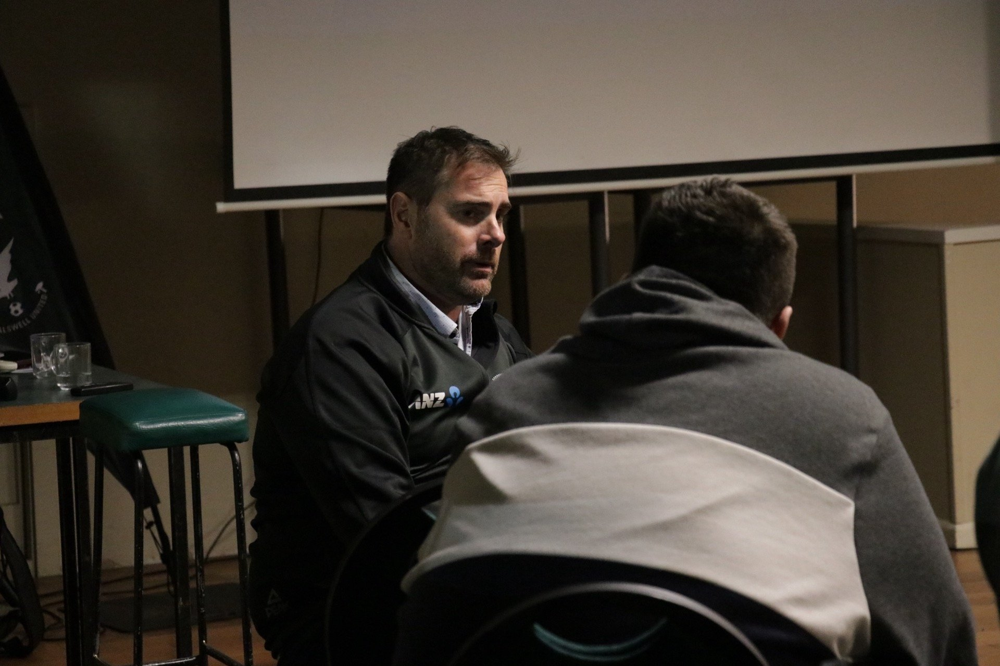
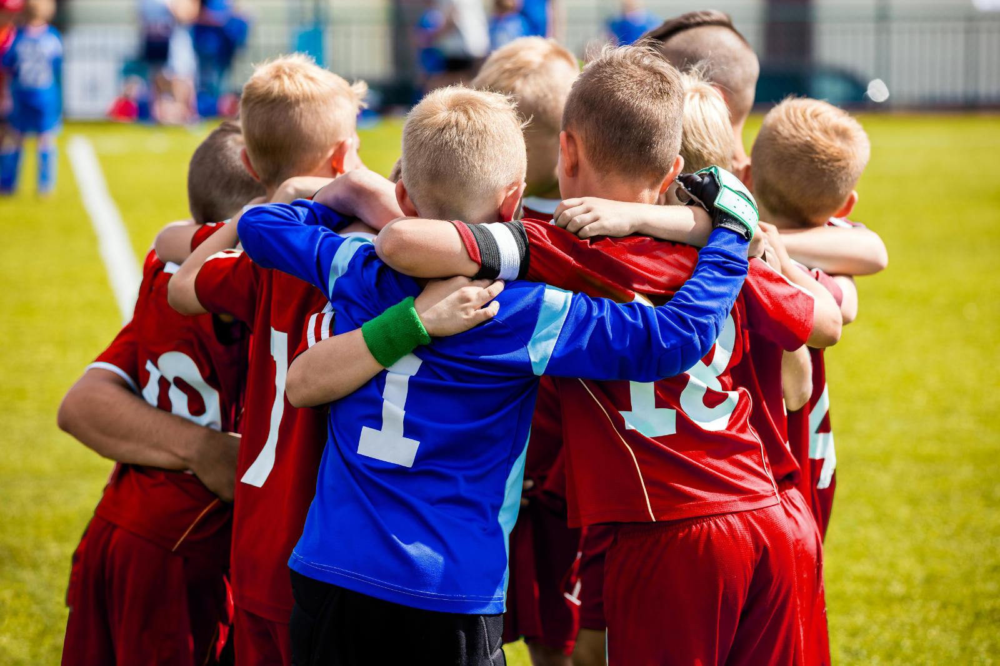
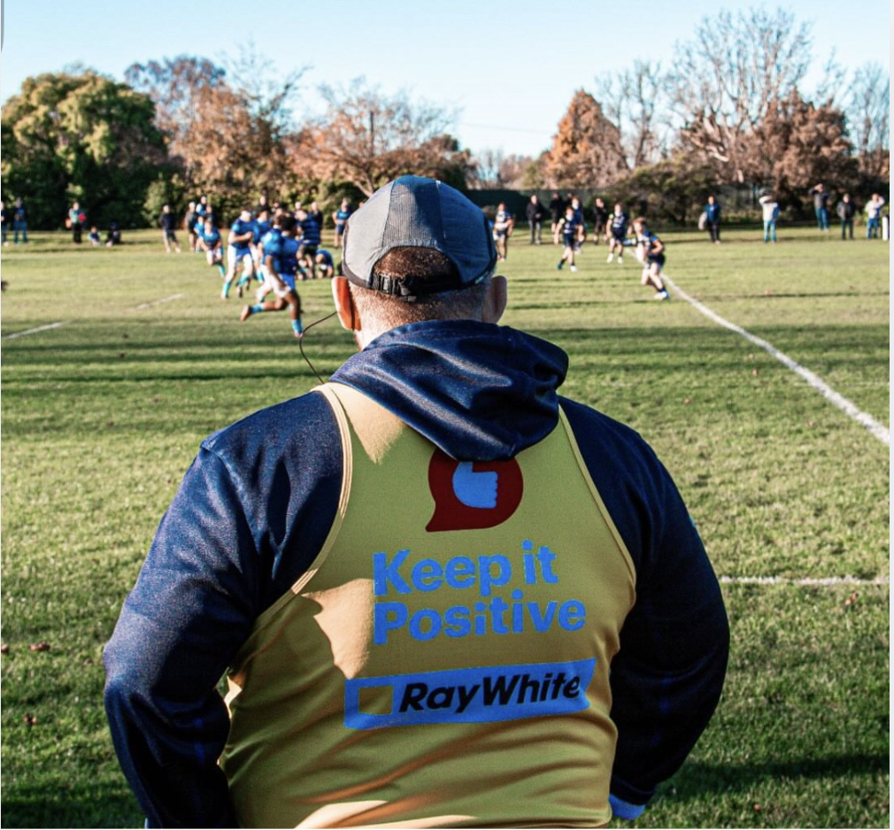

The Performance Act
Your club's exclusive sport psychology resource hub
Select your role to access your personalised resources.
Session workbooks, module frameworks, coaching videos, and reflection tools for bringing GROW to life on the training pitch.
Access Coach Resources →Your personal resources — mental skills guides, brain health tools, videos, and reflection challenges to sharpen how you perform.
Access Athlete Resources →Understand what your child is learning, how to support their mental skills at home, and the research behind the programme.
Access Parent Resources →You don't need a sport psychology background to use this — everything here is written for community coaches who want to give their players the best chance of performing and thriving. Below you'll find your session guides, background reading from the research, and a library that keeps growing throughout the year.
Your full library of session guides and coach development resources. Start with the most recent and work your way through the season.
Everything from Thursday evening — the research behind the session, the frameworks you practised (AOA, Sideline ACE, Pressure by Design), six constraints-led finishing activities, and your personal reflection space. This is your reference point all season.
Your U13s and U14s met their Saboteur, learned ACE, and left knowing that mental noise is universal — not a weakness. Here's everything you need to keep the work alive on the training pitch.
Your U15s and U17s built their Anchor — a personal value paired with a physical gesture — named their escape move, and learned the Halftime Recipe. Here's how to keep all of it alive on the training pitch and on matchday.
Drawn from research in ACT coaching conversations, team cohesion science, and motivational interviewing — all filtered through the PACT lens.
ACT stands for Acceptance and Commitment Therapy — but in sport, it's better thought of as a framework for helping people notice what their mind is doing and choose their actions based on their values rather than their fears. ACE is the player's three-step tool. This section is about the parallel moves for you as a coach — because the quality of a coaching conversation is measured not by what you say, but by what the player walks away thinking about themselves.
Most coaches try to put better thoughts into a player's head. ACT-informed coaching does the opposite — it helps the player notice the thoughts already there, take them less literally, and act on what matters to them. Your job isn't to fix the thinking. It's to create the space where the player can do that themselves.


In Session 2, players built their own personal anchor — a value and a gesture they can come back to under pressure. But individual tools only work fully inside a team environment where it feels safe to use them. Research on togetherness in sport (from social identity theory) and Amy Edmondson's work on psychological safety (she's a professor at Harvard Business School, not a sport scientist — but the principles transfer directly) shows that players who genuinely feel part of something — who think of the group as "us" — demonstrate significantly higher effort, take more risks, and recover faster from mistakes. For 13–17 year olds, this matters even more: belonging to the group is a primary psychological need at this developmental stage, and the fear of social exclusion is a major driver of escape moves.
Team culture isn't built in pre-match team talks. It's built in the five seconds after a mistake — in whether you shout or pause. In whether you say "get it together" or "that's done, what's next?" Those micro-moments accumulate into the environment your players perform in.
Motivational Interviewing (MI) is a research-backed approach to coaching conversations that shares the same core belief as ACT: the coach is not the source of motivation — the player is. Most of us grew up in coaching cultures where the coach provided all the answers. MI gently challenges this. It gives you a set of concrete conversational moves designed to draw out the player's own thinking, rather than installing yours. MI has now been tested in hundreds of randomised controlled trials — the research consensus is clear: a player's own words about their own development are more powerful than any instruction you can give. This effect is especially strong with teenagers, which is exactly the age group you're working with.
MI researchers describe the "righting reflex" — the automatic urge coaches feel to fix things, give answers, and tell players what to do. It's well-intentioned, but it typically produces resistance, not change. When you feel the urge to jump in with the solution, pause. Ask a question instead. The player's answer to "what do you think you need to work on?" is worth ten times your correct assessment.

Quick references, videos, research context and reading — all in one place, building throughout the year. Tap any item to expand it.
Where this comes from. The PACT programme is built on ACT — Acceptance and Commitment Therapy — adapted for youth sport. ACT emerged in the mid-1980s, developed by psychologist Steven Hayes and colleagues at the University of Nevada, and is now one of the most thoroughly researched psychological frameworks in existence. The first major textbook was published in 1999; since then the evidence base across sport, health, and clinical settings has grown substantially. The core idea is simple: psychological suffering comes not from having difficult thoughts and feelings, but from fighting them. The goal isn't to feel better — it's to act better, even when feeling difficult things.
What "mental noise" means. Mental noise is our shorthand for all the thoughts, worries, self-doubts and internal chatter that show up when the pressure is on — "I'm going to mess this up", "everyone's watching", "I always do this." Every player experiences this. The difference between those who perform well under pressure and those who don't isn't that successful athletes have no mental noise. It's that they've learned not to be controlled by it. ACT teaches exactly this skill.
Why we don't try to stop the noise — and why this matters especially at 13–17. Trying to suppress a thought ("don't think about missing") typically makes it louder — this is well-established in psychology research. The American psychologist Daniel Wegner demonstrated this in experiments: ask someone not to think about a white bear, and the white bear is all they can think of. ACT takes a different approach: acknowledge the noise, don't argue with it, and choose your action anyway. This is both more effective and more honest — your players already know the noise is there, and telling them to "just believe in yourself" or "don't be nervous" can feel dismissive. At 13–17, the adolescent brain is still developing the prefrontal cortex (the part responsible for managing emotions and impulse control), which means emotional reactions are genuinely more intense at this age — not weakness, not poor attitude, biology. This is why the acceptance-based approach works so well with this age group: it validates what's actually happening rather than trying to pretend it isn't.
The six processes of ACT, simply explained. ACT works across six interconnected areas: (1) Defusion — noticing thoughts without being fused to them, so a thought is just a thought rather than a command. (2) Acceptance — allowing difficult feelings to be present rather than fighting them. (3) Present moment awareness — coming back to what's actually happening right now. (4) Values — connecting to who you want to be and what matters to you. (5) Committed action — taking steps aligned with those values even when the noise says otherwise. (6) Self-as-context — the stable sense of who you are that exists beyond any single performance or result (a particularly important concept for teenagers, whose sense of self is still forming). The ACE tool your players learned compresses defusion, present moment awareness, and committed action into one repeatable five-second step.
Your U13s and U14s learned that mental noise is universal — every player gets it, even the best in the world. They met their Saboteur (the externalised inner critic — drawn as a cartoon character to give it form and name so it loses some power) and learned the three-step ACE tool. Here are the key coach reference points.
Your U15s and U17s explored what it means to play brave — not as a feeling, but as a choice. They built a personal Anchor (a value that matters to them, paired with a physical gesture) and learned the Halftime Recipe. Here are the key coach reference points.
Motivational Interviewing for Coaches — Life and Game-Changing Conversations
A practical webinar on applying Motivational Interviewing in coaching conversations — the OARS framework in action. Covers how to ask better questions, avoid the righting reflex (the urge to give the answer), and evoke motivation from inside the player rather than imposing it from outside. Directly relevant to the MI resource above.
Togetherness: Building Team Identity in Sport
Matt Slater's research on what actually creates high-performing team cultures — not team talks or team bonding events, but the micro-moments that build or erode belonging. Directly relevant to the team culture resource above and the team anchor work in Session 2.
ACT in Sport — How Acceptance and Values Drive Performance
An introduction to the ACT framework as applied in sport psychology — why trying to eliminate mental noise makes it worse, and how training athletes to notice thoughts without being controlled by them leads to better performance under pressure. The research foundation behind both PACT sessions.
Why the adolescent brain makes this approach essential. The prefrontal cortex — the part of the brain responsible for impulse control, decision-making, and emotional regulation — is not fully developed until the mid-20s. This is well-established neuroscience. It means that at 13–17, the emotional reactions your players experience are genuinely more intense and harder to regulate than they would be in adults. Mistakes feel more catastrophic. Social comparison is more overwhelming. The fear of looking foolish in front of peers is more powerful. This isn't immaturity or poor attitude — it's developmental biology. An approach that tries to eliminate those feelings will always fight an uphill battle. An approach that teaches players to acknowledge them and act anyway (ACT) is working with the biology, not against it.
Why ACT works in sport. Reviews of ACT-based interventions in sport consistently show improvements in performance-related outcomes — specifically in reducing experiential avoidance (the tendency to escape discomfort, which is what escape moves are) and increasing psychological flexibility (the ability to act on values even when mental noise is present). The ACE tool is a simplified, field-ready version of these processes. The evidence base for ACT in sport has grown substantially since the early 2000s and now covers both elite and youth contexts.
Why naming emotions reduces them. Psychologist Matthew Lieberman and colleagues at UCLA published research in 2007 showing that labelling an emotion — not just feeling it, but putting a precise word on it — activates the prefrontal cortex and measurably reduces amygdala (threat-response) activity. In plain English: naming what you're feeling turns the thinking brain back on and turns down the alarm. This is why the emotion coaching two-step (validate first, then help name it) works. The effect is stronger with a precise label ("embarrassment" rather than just "upset"), which is why it matters to offer options rather than generic comfort.
Why psychological safety drives performance. Amy Edmondson, a professor at Harvard Business School, has spent decades researching what separates high-performing teams from average ones. Her central finding: psychological safety — the shared belief that it's safe to take a risk, admit a mistake, or ask a question without being punished or embarrassed — predicts team performance more reliably than talent or incentives. Google's internal research project (Project Aristotle, 2016) studied 180 of their own teams and reached the same conclusion. For youth sport specifically, where the fear of looking foolish in front of peers is already heightened by adolescent brain development, psychological safety is not a nice-to-have — it is the foundation on which everything else sits.
Why MI outperforms advice-giving with teenagers. Motivational Interviewing has been tested in hundreds of randomised controlled trials across health, education, and behaviour change settings. The consistent finding: conversations that draw out the person's own thinking produce more durable change than conversations where the expert gives the answer. The effect is particularly pronounced with adolescents — because autonomy (the sense that my choices are mine) is developmentally central at 13–17. When a teenager feels told what to think or feel, resistance is the natural response. When they feel heard and asked, commitment follows. This is why the OARS framework matters practically: it's not just a communication style, it's a developmental fit.
For coaches who want to go deeper — these books are all readable, practical, and directly relevant to the work you're doing with Nomads.
The sessions you did with the squad — all the key ideas, interactive exercises, and 6 knowledge checks each. Return to them anytime.
Your mind is like a noisy passenger. Learn what it is, why it shows up, and how to use the ACE skill to keep playing your game — regardless of the mental noise.
Enter Session Session 2 · U15 & U17Brave isn't a feeling — it's a doing word. Connect your values to your actions, build your personal anchor, and learn to show up the way you want to when it gets hard.
Enter SessionSix short skill stations — each one builds a specific psychological skill from ACT and Mindfulness. Use these between sessions, before games, or whenever you want to train your mental game.
Type any unhelpful thought and defuse it in real time. Learn to create distance between you and the noise.
Enter Station → Station 02Understand the Nomads Compass — anchor word, weather check, physical cue — and train your personal routine.
Enter Station → Station 03Interactive box breathing and the science of why your body is the fastest route back to now.
Enter Station → Station 04You are not your thoughts — you are the one noticing them. Explore self-as-context through four reflective questions.
Enter Station → Station 05Acceptance isn't giving up. Rate three real scenarios and discover what it means to carry a feeling and act anyway.
Enter Station → Station 06Three high-intensity Nomads scenarios. Apply ACE to each one and see exactly how Acknowledge · Come Back · Engage works under real pressure.
Enter Station →These talks explain the core ideas your child is learning — and give you language and insight to support them at home.
The guides your child is working from — so you understand exactly what they're learning and how to reinforce it.
Questions designed to make you think about your role in your child's sport environment. Honest, evidence-based — click to reveal the insight.
A research-based scenario. Choose your answer and get instant feedback from the evidence.
Books and resources curated for parents in the GROW community.